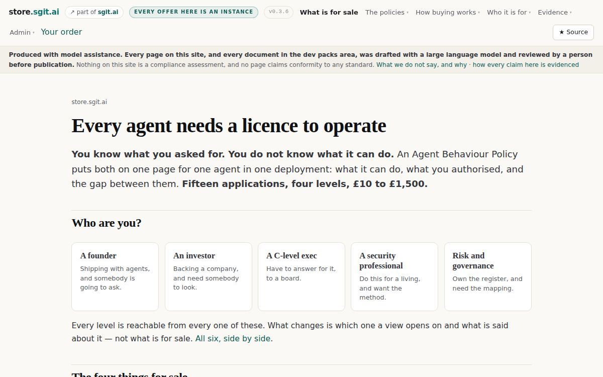
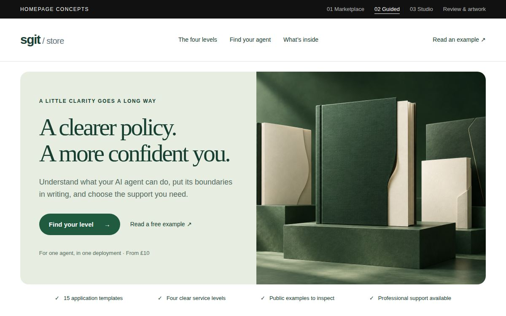
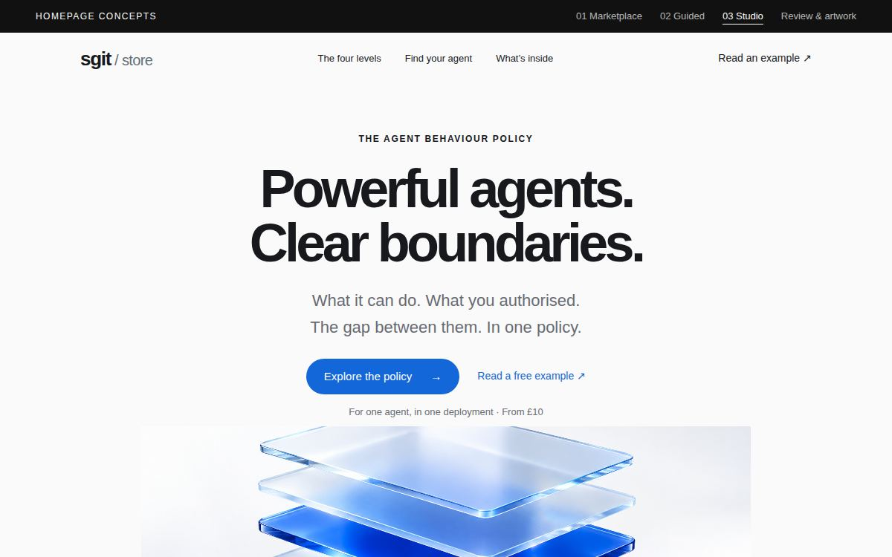
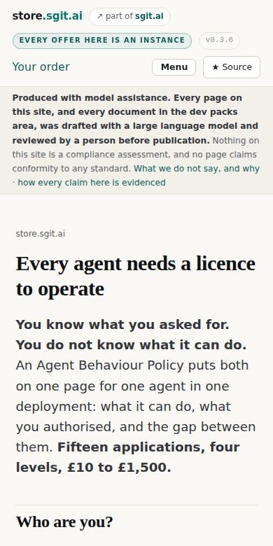
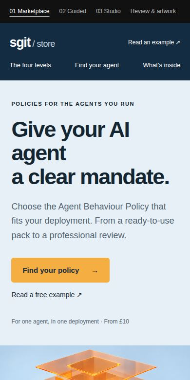
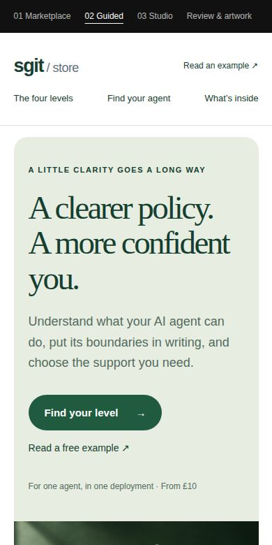
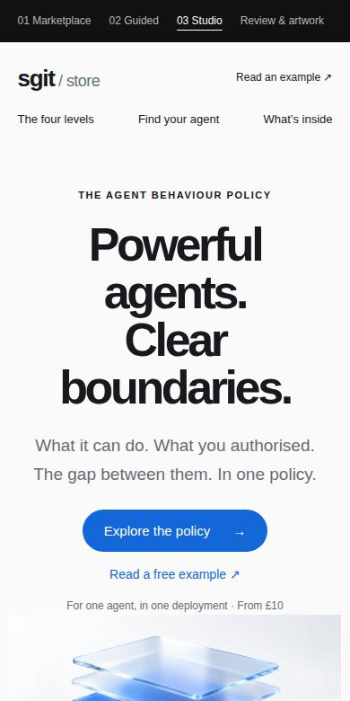
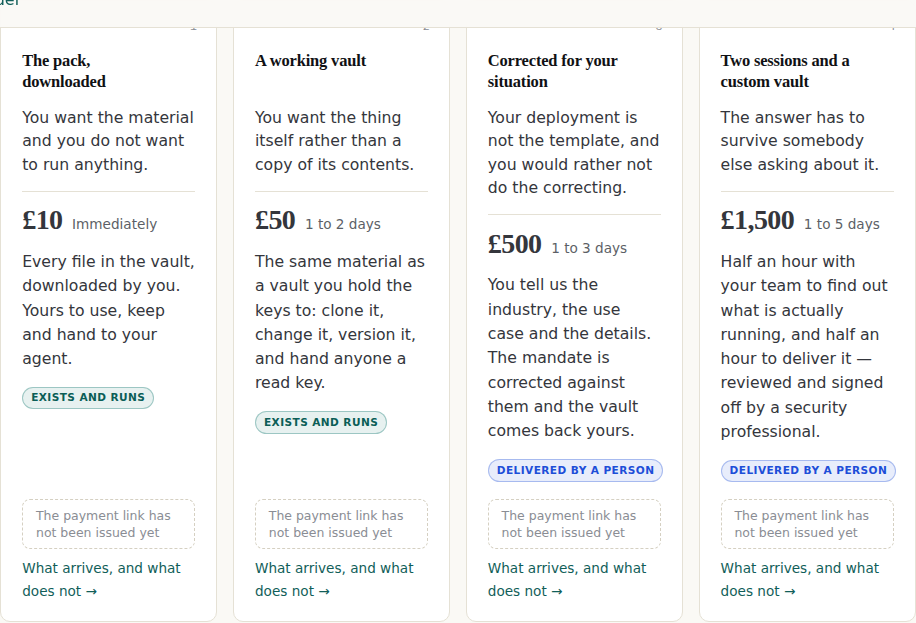
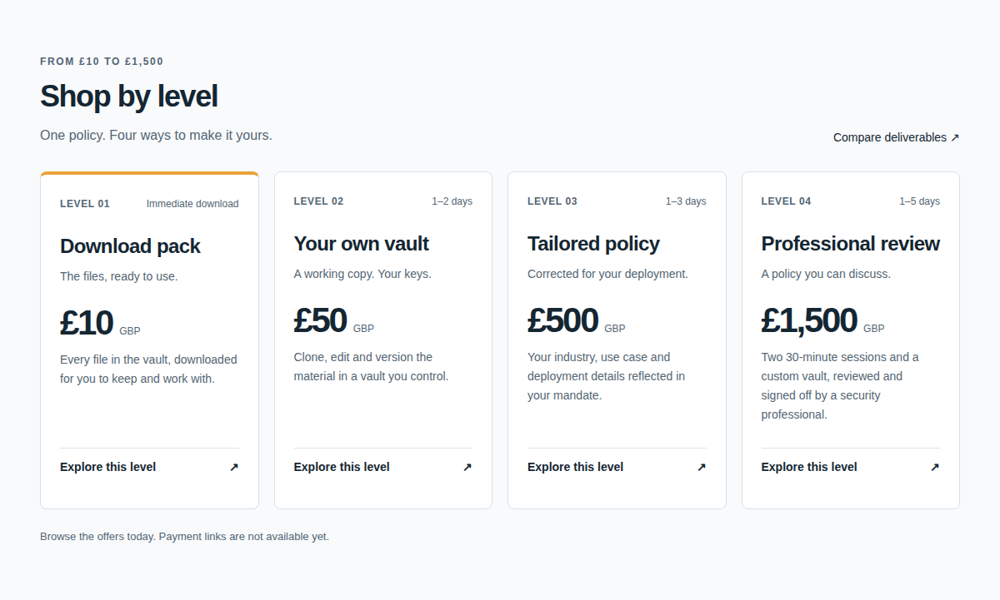

/ admin / concepts
The homepage concepts, reviewed
Three concepts, two worth taking from, one live defect found. Somebody else’s design work, mirrored and hashed so the critique points at something fixed.
Three homepage directions were drawn for this store by a ChatGPT session, from the live page, on 16 September 2026. This is the review of them. Two contain structure worth taking, one is pointed at a buyer this store does not have, and the review page attached to them found a live pricing contradiction between this store and RiskMandate.ai that nobody here had noticed.
They are somebody else’s work and are shown as such. The pages, the stylesheet and the four generated images are mirrored under data/concepts/ with a sha256 each, because a critique of a page that can change underneath it is a critique of nothing. Source: riskmandate-store-concepts.diniscruz.chatgpt.site, retrieved 2026-09-16.
Two of the three concepts contain structure this store should adopt, one of them contains a headline better than ours, and the review page attached to them found a live pricing contradiction between the two properties that nobody inside had noticed. That is a good return. What none of the three could supply is the thing that was never on the page they were drawn from: a buy button. They are a better shop window for the same closed shop — which is a fair description of what was asked for, and the reason the next release is the till rather than the window.
The four of them, at the fold
Same viewport, same encoder, same wait. The only variable is the page.
{kind=link}

{kind=link}
{kind=link}
{kind=link}
{kind=link}

{kind=link}
{kind=link}

{kind=link}
The same four at 390px
This is where the difference stops being a matter of taste. The live homepage is 10,710 pixels tall on a phone — thirteen and a half screens — against roughly five thousand for each concept. The first thing a visitor meets is a nav block and a disclosure strip, and the headline starts 358px down.
{kind=link}

{kind=link}

{kind=link}

{kind=link}

The disclosure strip is not a candidate for removal: it is required above the main element on every page here and a build check refuses a page without it. What is a candidate is everything above it.
What the measurements say
A design critique that says a page feels long is an opinion. These are the seven things that were actually measured, and six of the seven go against the live homepage — which is most of the argument below, before a word of taste is spent.
| Measured | Live today | 01 Market | 02 Guided | 03 Studio |
|---|---|---|---|---|
| Words on the pageThe current homepage carries four and a third times the copy of any concept. | 1,980 | 457 | 465 | 449 |
| Links in the headerCounted across header and nav, dropdowns expanded. The concepts put operational destinations in the footer. | 48 | 9 | 9 | 9 |
| Page height, desktopAt 1200×750. | 5,153px | 3,296px | 3,235px | 3,788px |
| Page height, mobileAt 390×780. Thirteen and a half phone screens against six and a half. | 10,710px | 5,042px | 5,131px | 5,176px |
| Headline size, desktopThe memo asked for big banners and big stuff. The concepts did it and this page did not. | 40px | 55px | 58px | 72px |
| Price size on a cardEach concept sets the price as the second-largest thing on the page. Here it sits inline with the delivery estimate at body weight. | 28px | 42px | 42px | 42px |
| Buy button on a cardNot a difference — an agreement, and the finding that matters most. Neither the live store nor any concept has one. See below. | none | none | none | none |
Method. Chromium at 1200×750 and 390×780, every page served from loopback — this repository's docs/ for the current homepage and data/concepts/mirror/ for the three concepts. Word count is document.body.innerText; nav links are header and nav anchors; height is document.body.scrollHeight. Re-runnable: the tool that shot the screenshots serves the same two roots.
Each concept, and what it is for
Marketplace
Take the structureStated reference: Amazon-style shopping clarity
A store header, a visible price ladder and four compact offer cards. Built for a buyer who already knows roughly what they want and is choosing between levels.
The price ladder is the best thing on any of the three pages and it is better than what is live. Four cards, identical anatomy, level number top-left, delivery estimate top-right, the price at 42px, one action. A buyer can compare four things without reading a sentence — which is exactly what somebody comparing four things wants to do.
The navy header is a second brand. It is not this store's palette, and the store already has a header that does a job the concept's header does not: it says which version of the site you are reading and that every offer is an instance. Take the card grid, not the chrome.
Artwork. Isometric navy folio with translucent orange permission layers. Competent, and the one genuinely arresting image of the three.
Guided
Wrong buyerStated reference: approachable retail merchandising
Forest green, rounded everything, a serif headline and softer language. Built for a buyer who does not yet know what this is.
The agent chips — pill-shaped, one per application, five across — are a better 'which agent do you run?' than the live one, and the rounded card is easier to scan than a bordered box.
'A clearer policy. A more confident you.' is selling a feeling to somebody buying a document they will hand to an auditor. The whole reason a C-level exec or a GRC lead is on this page is that somebody is going to ask them a hard question, and warmth is not the answer to it. The palette is also a third brand, unrelated to either property.
Artwork. Green folios on stepped plinths. Well made and pointed at the wrong shelf.
Studio
Take the headline, leave the roomStated reference: product storytelling, centred and premium
A centred statement at 72px, a single large object, and a great deal of air. Built to make a first impression before it sells anything.
'Powerful agents. Clear boundaries.' is the sharpest line produced anywhere in this exercise, including by this repository. Two three-word halves, the tension stated rather than explained, and it survives being read at a glance across a room. The 72px setting is right.
The centred hero spends 850px before the first product. This store sells four things at four prices and the fastest question a visitor has is what they cost; an Apple-shaped page defers that question by design because Apple sells one thing at a time. It is also the tallest of the three concepts while carrying the least.
Artwork. Frosted glass layers over a cobalt core. The most literal rendering of the grant/mandate/gap idea, and the most reusable of the four images.
What this store takes
The single comparison that decided most of it — the same four offers, priced the same, one week apart in design thinking:
{kind=link}

{kind=link}

Six moves. Each one names what it costs us, because a borrowed idea whose price is not written down gets adopted and then quietly reverted.
Set the price like it is the product
from Marketplace
Four cards of one anatomy: level and delivery on one line at 12px, the name, one line of what it is, the price at 42px, one sentence, one action. Identical order in every card so the eye can run down a column instead of reading four paragraphs.
Why. The current cards put the price at 28px inline with the delivery estimate, then follow it with up to sixty words. A buyer comparing four levels is doing a table lookup and the page is handing them prose.
What it costs us. The claim chips currently sitting inside each card have to go somewhere. They are load-bearing — they are how a reader checks that 'delivered by a person' is a thing somebody stood behind — so this is a move, not a deletion.
Say the tension in six words, at 72px
from Studio
A headline of two short halves that names what the product is for, set large enough to read at a glance, with the explanation demoted to a subhead.
Why. 'Every agent needs a licence to operate' is a good line carrying a real risk: the review flagged that 'licence to operate' reads as regulatory permission unless something next to it says otherwise. 'Powerful agents. Clear boundaries.' has no such ambiguity and is shorter.
What it costs us. Nothing, if the phrase that replaces it is as specific. A vaguer line at 72px is worse than a precise one at 40px.
Four facts across, under the hero
from Marketplace
A single row of four short, checkable statements between the hero and the first product section: fifteen application templates, four levels, public examples, professional support.
Why. It answers the four questions a visitor forms in the first five seconds without opening a section, and every one of the four is already true here and already evidenced in the ledger. It is a free win and the only reason it is not live is that nobody drew it.
What it costs us. None, provided every item stays linked to its claim. A trust strip whose items are not checkable is the exact thing this store refuses.
Applications as chips, not as a list
from Guided
One pill per application, five across, each a link, with a sixth reading 'something different — a tailored policy starts at £500'.
Why. It turns the application list from a directory into a self-identification, and the sixth chip converts the miss into the £500 level instead of a dead end. The live page lists applications; it does not route on them.
What it costs us. None. This one is straightforwardly better.
The one we already do, and should keep doing
from the review page
The review's recommendation was to keep proof pointed at public examples a reader can open, and to invent none of the devices a store reaches for when it has no buyers yet — star ratings, testimonials, customer counts and standards-body marks.
Why. It is recorded here because a product-page memo asked for a reviews and stars section, and an outside reader — with no knowledge of this repository's rules — independently arrived at the reason not to fake one. It is also, quietly, the second-hardest rule on this site: the words for that last device are barred outright, and this page's first draft tripped the check by quoting the review's own sentence approvingly. The rule does not care why the word is there, which is the point of it.
What it costs us. None. It costs the thing that was never going to be bought anyway. When the stars arrive they have to be real reviews from real buyers, and until there are buyers there are no stars.
What it refuses
- The three palettes. Navy-and-amber, forest green and cobalt are three brands, none of them this one and none of them RiskMandate's. The concepts were drawn against a page rather than against a design system, so this is not a criticism of them — but adopting one would mean the store and the product site look like two companies, on the same week we decided a buyer should never notice leaving one for the other.
- Arial and Georgia. Every concept sets its type in Arial, Helvetica and Georgia with tight negative letter-spacing, which reads as a placeholder for a typeface rather than a choice of one. The live site's serif-and-system-sans pairing is better considered. Take the sizes; keep the faces.
- The footer disclosure. All three concepts put the model-assistance and not-a-compliance-assessment language in small grey type at the bottom. This site puts it above the main element on every page and a build check refuses to ship a page without it. That is not a style preference and it is not negotiable, and it is the one place where a concept cannot be adopted as drawn.
- Dropping the persona doors. All three concepts open on the product and route by application — which agent do you run. The live page opens on who you are. The memo was explicit about wanting the second: a laptop open, somebody comes along, who are you, a founder, boom. Application routing is a good addition and a bad replacement, and the concepts were drawn before the audiences existed so they cannot be faulted for it.
What the outside review found about the live site
Four claims were made about this store rather than about the concepts. Every one was checked.
The review reported that this store lists £10 for the download pack while RiskMandate.ai says £5.
Checked. Checked on 16 September against riskmandate.ai's homepage, which carries the line '1 · £5 The pack, downloaded'. The contradiction is live as this page is published.
The price moved from £5 to £10 on this store on a memo from the project lead, and the product site was not moved with it. A buyer who reads both properties — which is the whole point of them being one flow — sees two prices for one thing. An outside reader with no access to either repository found it in a single pass.
What happens about it. Carried into the RiskMandate brief as a correction, not a suggestion.
The review said 'licence to operate' is a useful idea that needs context beside it, so a buyer does not read the deliverable as regulatory permission.
Checked. The homepage headline is 'Every agent needs a licence to operate' and the phrase is not defined until the second paragraph.
This store bars the words that would imply a compliance product, checks for them on every build, and then leads with a phrase that a reader can take that way unaided. The bar is doing its job on vocabulary and missing it on the headline.
What happens about it. Open. Needs a ruling from the project lead, because the phrase is also the name of a document inside the vault.
The review found the £50 card saying 1–2 days while other copy said the first two levels are produced immediately.
Checked. True of the page the concepts were drawn from. Not true of the current build: every level now carries an estimate and the clock it runs from — immediately, 1 to 2 days, and for the upper two, 1 to 3 and 1 to 5 days from your reply rather than from your payment.
It is worth recording that an outside reader found a contradiction the delivery-times work had already closed, because it dates the concepts precisely and it means the rest of their findings were made against a real page rather than a guess.
What happens about it. None.
The review noted the store says its payment links have not been issued, and that no concept simulates a completed purchase.
Checked. True. Six products are priced in Stripe and reconcile to the penny on every release; three coupons exist; and every card on the homepage still shows a grey box reading 'the payment link has not been issued yet' where a buy button belongs.
This is the finding that outranks every design question on this page. Three concepts were commissioned to make the homepage sell, and all three of them — faithfully, because they were drawn from the live page — reproduce a store that cannot take money. The best hero in the world above a disabled button converts nothing.
What happens about it. It is the first unit of the take-money workstream and it is what the next release is for.
What this page is not
Every judgement on this page is a design judgement, made by reading and measuring the pages. Nothing here was A/B tested, no visitor was observed, and no conversion number exists for any of the four designs. The review page attached to the concepts says the same of itself, and it is right to.
The mirror
Ten files, taken once and hashed. python3 tools/promote_concepts.py --check re-fetches them and reports any drift; node tools/shoot_concepts.mjs regenerates every image above from the mirror and from this repository’s own build.
Each mirrored HTML page had the host CDN's injected bot-check bootstrap removed before hashing, because it carries a fresh nonce on every response and would otherwise report drift within seconds of the mirror being taken. Nothing the author wrote was touched; cdn_script_removed below counts the deletions per file.
| File | Bytes | sha256 |
|---|---|---|
index.html | 7,437 | 6fe95ae8c0da8b72 |
guided.html | 7,467 | 955f3b854d3921a6 |
studio.html | 7,406 | 86129bd117fbddfc |
review.html | 7,379 | cef5cae39425c819 |
style.css | 13,122 | 3c5e27651c58292c |
app.js | 1,772 | 4acff796f1133510 |
assets/marketplace.png | 2,072,654 | c25c561c43abd098 |
assets/guided.png | 2,212,746 | dbe2690a14c52b9c |
assets/studio.png | 1,664,322 | a820a7c5ae5406cc |
assets/infographic.png | 1,521,223 | 1f8f34372c55f62e |